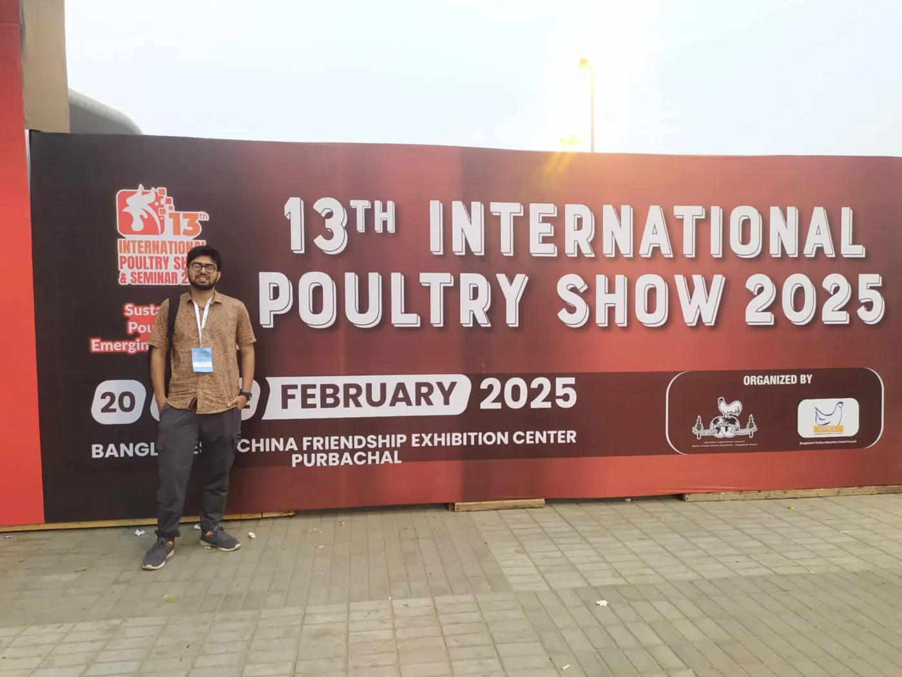
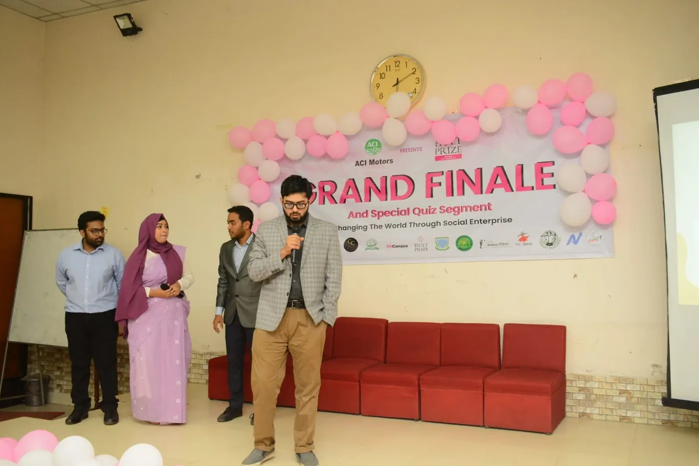

About
From the feed room to the data
I studied Animal Husbandry at Bangladesh Agricultural University and am now finishing an MSc in Animal Nutrition there. My training is hands-on: broiler feeding trials, rearing black soldier fly, superworm and mealworm larvae, proximate and NIR analysis, ration formulation.
Along the way I kept meeting the same problem. Farms and trials produce numbers, but the questions that matter (how heavy is this animal, how will this pen finish) need models, and models are easy to fool yourself with. So I taught myself Python, machine learning and computer vision, and learned to test models the hard way: on animals, pens and batches they have never seen.
My aim is a PhD where animal science and computational methods meet, in precision livestock farming or computer vision for livestock.

How I learned machine learning
Thank you, StatQuest. BAM!
The book that opened the door for me was The StatQuest Illustrated Guide to Machine Learning by Josh Starmer. It explains each idea with drawings and small steps, and cheers you on with a "BAM!" every time something clicks. Least squares, residuals and R² stopped being formulas and became pictures I could reason with.
The doodle is mine: a mealworm (my first research animal) fitting a line. The style tips its hat to the book.
Try it: fit a line, earn a BAM!
Click the plot to add points. Drag a point to move it, tap it to remove it. The red line is the least-squares fit; the dashed lines are the residuals it tries to make small. Line the points up to earn a BAM!
R² is the share of the spread in y that the line explains: 1 means every point sits on the line, 0 means the line does no better than the average.
Beyond research
Hult Prize at BAU
Second Runner-Up twice, in 2022 and 2023. In 2023 I led the team. Under that year's challenge on fashion, we built a concept that brought agricultural by-products into the fashion value chain.

Teaching and service
Giving back
- Lead Instructor, online farmer workshopShowed about 10 farmers how to build a low-cost black soldier fly "love cage" for egg collection. Department of Animal Nutrition, BAU.May 2026
- IELTS Instructor (speaking and reading), onlineMentored three students.Sep – Dec 2025
- Research and Development Manager, BAU Career ClubDec 2021 – Dec 2022
- Examiner, Bangladesh Biology Olympiad, Mymensingh2020
- Member, World's Poultry Science Association, Bangladesh BranchSince Feb 2026
Fellowship
National Science and Technology (NST) Fellowship, Ministry of Science and Technology, Bangladesh, January 2026, for my yellow mealworm research.